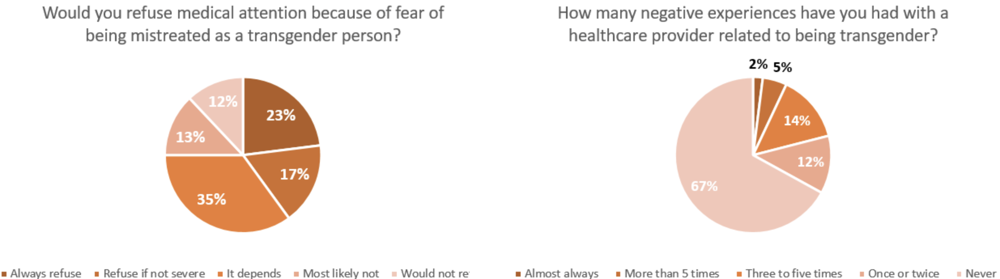
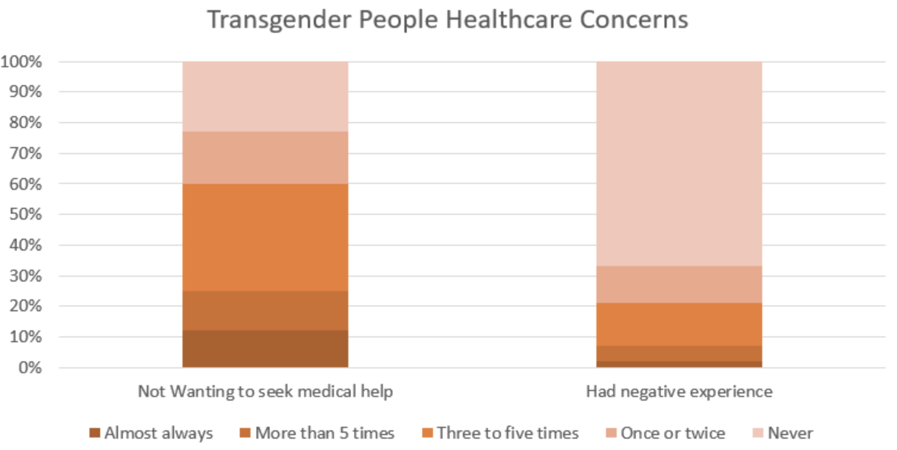

Good Visualizations
Degrees of Democracy
SourceAnalysis
The author created this visualization for anyone who would be interested in studying or comparing the degree of democracy across 167 countries of the world. This visualization could be posted or used as a reference for articles talking about democracy in different countries. The purpose of this visualization is to compare the 167 countries based on their degrees of democracy while including measures like their population, land mass, and size of economy as side comparisons. The author encodes countries as a categorical attribute by spatial position using area marks, the degree of democracy as an ordered attribute using area marks shown with spatial positions and color hue channels, population, land mass, and the size of economy as quantitative attributes using area marks and shown with the spatial region channel varying by size. With interactions enabled, this allows the user to quickly identify the opposite ends of the spectrum while noticing the large chunks of space held by major countries like the US, Russia, and China. Users are allowed to hover over each section, selecting a specific country and a tooltip with all the relevant information would appear. Users can also select by international groups such as by continent or by international organizations like the EU and NATO. Then the users are able to compare the countries’ position on the democracy scale and their political and economic powers to derive their own takeaways. The visualization creator published the data source on the same page validating the truthfulness of the data source. Presenting the population, land mass, and economy along with the degree of democracy allows for great functionality. The color scheme chosen for this visualization and the general layout along with the interactivity makes it visually appealing for users to poke around and engage with it. Instead of trying to feed the user a story, the visualization gives the user tools to create their own judgement and takeaways. Being able to see the constituents of an international organization on the democracy scale can also inspire in many ways.
Considering all aspects of this visualization, it does a great job utilizing the most effective and visually appealing elements to encode and deliver the data. The presentation is unique and the intuitive interactivity makes it engaging for the audience and overall creates a very positive experience.

Analysis
The primary audience for this visualization is anyone who is interested in history and those who would like to understand what happens over time. The main goal of this visualization is to provide a nutshell of the recorded human history as well as the contemporary understanding of the prehistorical events. The visualization also gave us an impression of how humans know significantly more events for recent history than distant ones.
Information about the date of the historical events, such as publication of literature, the composition of music, wars, political treaties, monument constructions, innovative inventions, and etc. The visualization encodes the data using data points in a streamgraph. These events were simplified into dots, a zero-dimensional mark. These marks are positioned into both horizontal and vertical channels. The horizontal axis encodes time, and the vertical channel encodes the number of events given a time. The design characterized recorded human events into 15 subcategories. The readers could easily read through one particular subcategory that they are particularly interested in or compared two subcategories. One could also click on particular dots throughout human history and learn more about such events. For instance, the dot for “THE BIG BANG” contains 3 external links: watch videos, read wiki page, and related events. The visualization is truthful because each event he included is equally weighted. The only shortcoming might be the data points are selected by the author. The visualization is functional since it is easy to read and clear. People could easily do meaningful operations based on interactive design. The visualization is beautiful because it selected colors that are well-balanced and the fonts are well designed with certain bold characters. Most importantly, the visualization is insightful since it provides rich historical and factual information that could be found nowhere else. People could easily draw conclusions from the charts using different filters. The visualization is enlightening since some of the subcategories it emphasizes are social-justice oriented. For example, there is a “Women Rights“ subcategory so that readers are invited to think about the evolvement of the women’s rights movement throughout history.
In conclusion, I think this visualization is excellent. I love putting things in chronological order to analyze the effect of specific historical events and draw links in between. The chart provides rich information on different aspects of what humans had known. It also provides readers a framework for understanding certain historical periods and what is previously neglected in a particular era.
Best in Show: The Ultimate Data Dog
SourceAnalysis
Audience: Since pet dogs are popular and ubiquitous, the audience of this visualization may just be the general public. Dog lovers, owners, or prospective owners may be more likely to see it. Message: In general terms, this visualization shows that there are some very popular dogs (e.g. German Shepherds) are actually overrated due to high cost, short life, heavy shedding, or some other factors; on the other hand, there are also dogs that are greatly underrated (high score but low popularity). There is an additional specific piece of information that audiences can infer from this visualization: good dogs are more likely to be popular, since the top-right quadrant (high score and high popularity) is the most dense quadrant. Data Recorded: The popularity and data scores that each dog breed are encoded in the axes. Additionally, each breed’s intelligence, size,pet type are also encoded in each icon. Encode Methods: Each breed’s location in the coordinate indicates whether it’s overrated, underrated, rightly popular, and good but overlooked. The color, direction faced, and size each encodes the type, intelligence (categorical), and size of the breed. Readers' tasks: The readers first need to read the axis to know what they represent, then read the legends to know what the grading criterias are, and finally locate each breed to see whether they are overrated, underrated, etc.. Additionally, by seeing the trend that the top-right quadrant is the most dense, they can also infer that better dogs are more likely to be popular.
Five Principle Analysis: Truthful: the visualization is truthful. It pins each dog breed on one single coordinate graph with the criteria and legends clearly stated on the side. Functional: the visualization is very easy to read and understand because it uses many effective channels for conveying categorical information like shape and color. Beautiful: the visualization is surely very beautiful because the shapes or dogs and color-selection are very engaging. Insightful: the visualization is very insightful because it gives a holistic evaluation of each breed of dog; on the other hand, humans tend to greatly rely on appearance and friendliness when evaluating a breed of dog. Therefore, it makes valuable discoveries that are otherwise inaccessible through a different representation approach. Enlightening: this visualization is somehow enlightening because even though dogs are not a serious topic, the findings of this visualization may pave the way for further research in pet dogs (meaningful for dog lovers and dog owners).
Good or Bad: This visualization is good in general because firstly, it conveys a lot of information in just one coordinate system (with the help of size, color, etc.). Secondly, it uses the silhouette of the dogs as the data points, which engages audiences. Some data representation is very simple but effective, for example: the direction that the dog is facing tells whether the breed is relatively intelligent or not.
Bad Visualizations
Visualization on Transgender Equality
Source{kind=link}
Analysis
This visualization is designed for people who are interested in learning about the LGBTQ community especially the transgender community and how they are treated by the wider public. Through the two pie charts, it is clear to see the message to raise awareness on that transgender people are treated differently and negatively by healthcare providers. The visualization encodes quantitative attributes on the percentage of responses on a certain category for two survey questions. The data are encoded using area marks and with spatial region and color hue channels through a pie chart. The visualization supposedly wants to present that transgender people are denying medical attention because of fear of been mistreated, while using the reported negative experience as the support through comparison. However, the section marked 23% is noticeably larger than the section marked 33% on the other pie. Not sure if it is out of poor design or is a blatant attempt to mislead the audience. Also, trying to use one response from a survey to support another argument is not a scientifically rigorous approach. The color scheme is dark and unappealing but maybe is suitable for its topic. The pie chart also didn’t follow the conformity to start the slice at the 12 o'clock position, adding to the confusion for the audience, nevermind providing useful insights.
Visualization on Transgender Equality: Redesigns
Redesign #1
Redesign #2
Redesign #3 (Best)
Explanation and Best Redesign
I used modified pie charts and a stacked bar chart for my redesigns. Since the original data consist of nominal responses, I kept the encoding using area marks with spatial region and color hue channels. In order to make it truthful and more visually appealing, I first fixed the pie charts to represent the correct amount of area on the pie, then moved to change the data selection for the visualization. Instead of using nominal attributes and highlighting those who refuse medical attention with those who reported at least one negative healthcare experience, I think it is more subjective to provide more context and details. I chose to split up the responses to five categories, and gave them color hues from the darkest representing the most severe to the lightest hue. Making the visualization more subjective and accurate.
Among the three redesigns, I think the best is #3 with the stacked bar chart. In order to make an accurate representation of the survey data and highlight the potential correlation between the two questions, I chose to put the two side by side in a stacked bar chart by percentage. The color hues and sizes of sub-bars would highlight the severity in the responses of each question, making it easy to compare the sub-bars with all responses as well as comparing the trend of one question to the other. This graph also seems to imply correlation such as “there are more transgender people who would refuse medical attention than those who have had negative healthcare experience” from the color hues which can be insightful for some audience. Due to the limitations of the data, we were not able to create much interactivity, but if possible, we could add tooltips to present more details or examples for each sub-bar, giving the audience more context and information for their own interpretation.
Interactive Weekly Unemployment Insurance Claims (historical view)
SourceAnalysis
The primary audience of this visualization is anyone interested in the weekly unemployment claims of the great state of Alabama. The visualization is meant to display the unemployment claims over time. The visualization might want to address the issue of when and whether the economy was recovered from COVID-19.
The data contains weekly unemployment claims of different counties in Alabama since the week of March 14, 2020. The creator used the size of the bubbles as a channel to represent the number of claims each week. The readers could try to identify the week with the extreme number of unemployment claims. Yet, it is very hard for anyone to compare the values and seeing trends of recovery. I think the visualization is truthful because the data source, the Alabama Department of Labor, is (hopefully) accurate and unbiased. I think the visualization is somewhat functional since the size of the weekly unemployment claims was truthfully displayed. However, the chart is very misleading and chaotic. I don’t think the visualization is beautiful. Colors were randomly selected and do not embed with any information. Fonts were randomly selected and variables were not named properly on the graph. Additionally, this visualization is not insightful at all because it does not help the reader understand any phenomenon and trend. In my opinion, this visualization failed to enlighten people on what is supposed to be very important. Unemployment claims are a very important indicator of the recovery of the economy. It is very irresponsible to provide misleading information.
All in all, I think this is a lousy visualization that scores low on all five principles. The colors and the order of the data are meaningless and chaotic. The display shows nothing about the trend within the historical data. Readers could hardly found anything meaningful and insightful from this chart. The chart could provide a drawback on a crucial topic, which is the weekly initial unemployment claims. It is nothing more than a complete disaster.
Interactive Weekly Unemployment Insurance Claims: Redesigns
Redesign #1
Redesign #2
Redesign #3 (Best)
Explanation and Best Redesign
I used a line chart, a bar chart, and a mix of both for my 3 redesigns. I used lines and areas as my primary marks. Using time as a horizontal attribute, the chart put the vertical attribute as weekly claims for redesign #1 and #2 and week-over-week changes in redesign #3. I think also the first two redesigns from me are already significantly better than the original. For the readers to draw meaningful insights on the trend, a second data series has to be introduced. Because the original visualization is so bad, the bar is so low that any chart that puts the data series in chronological order is significantly better. I think the weekly percentage change data series that I generated from the original data also provides the readers with a lot more insights and increases the awareness of week-to-week differences that the bar chart sometimes failed to address. Any conclusion could be easily made from my redesigns, but not the original chaotic chart.
For my best redesign(#3), I excluded some outliers from the weeks of the initial outbreak to show how the economy recovered from the pandemic. Shrinking the range of data provides the reader a better understanding of what’s happening on a weekly basis. The pre-Covid time data was not displayed in the original source, otherwise, I would have included a pre-covid historical average as a benchmark to offer the readers better insights.
Gender Pay Gap (US, partial view)
SourceAnalysis
Audience: The audience may be the general public or people who study gender equality. Message: This visualization mainly shows the payment gap between genders in different jobs. It offers sorting functions to make it easier to see what jobs have the widest/narrowest gender pay gaps. Data Encoded: Categories of jobs are encoded on the y-axis. The x-axis represents the payment amount. The gap between male and female points tells the payment gap. Encode Methods: Each job is encoded by its location on the y-axis. Length (gap between the two data points) represents how big the gap is. Readers' Tasks: Readers first locate the specific job they want to examine, then analyze the length (gap) between the male and female data points to get the value of the payment gap. By identifying extremes, readers can also see which jobs have the widest/narrowest gender payment gaps.
Five Principle Analysis: Truthful: this visualization is truthful because it shows the payment gap not in general, but in different occupations (eliminates bias). It also uses the same scale for all job types. Functional: this visualization is not very functional because the data points are too far away from the y-axis (job types), causing trouble locating the target information. This can be easily and effectively tackled with a bar chart. Beautiful: the visualization’s choice of color and spacing is ok, but, again, the huge space between data points and y-axis may cause frustrations for readers. Insightful: this visualization is insightful because it shows gender payment gaps by job types, rather than showing a general gap in all occupations. These are valuable pieces of information. Enlightening: despite designing flaws, this visualization is still enlightening because it tells in which job types the gender payment gap is the widest. This can enlighten some further research in these occupations to try to figure out why such huge payment gaps exist.
Good or Bad: This visualization is generally bad because, first and foremost, the data (data points and lines between them that represents the gap) is usually too far away from the y-axis which indicates what kind of job it is. This gives readers trouble at effectively locating the gap of the target job, causing potential time-waste. Moreover, the categories of jobs are not very distinguished from the jobs under this category (category is only text-emphasized).
Gender Pay Gap: Redesigns
Redesign #1 (Best)
Redesign #2
Redesign #3
Explanation and Best Redesign
I used a double line chart, a side bar chart, and a stacked bar chart for my 3 redesigns. I used lengths and areas as my primary marks. The vertical axis is the primary channel to display the gender pay gap, while the horizontal axis portrayed the different job categories.
Among all 3 of my redesigns, I think the stacked bar chart is the best one. While recognizing the differences between different genders, the stacked bar provides a truthful representation of the data as well as drawing an adequate impression on the gap. While the double line chart makes the gap seems huge, the side bar chart makes the difference between men’s and women’s salary indistinguishable. While all the data points are too far away from the y-axis (job types) in their original design, all 3 of my redesigns solved this problem by attaching the value to the subcategory on the x-axis. In addition, I believe bar and area are a better indicator of salary than the original whisker plot as the marginal benefit of increasing salary is not linear. Also, the true gap could be magnified in certain situations from the original graph. For simplicity of display, all the redesigns are limited to a portion of the original data. Shrinking the sample of the data would result in limited exposure to the big picture. While all the data here are selected from the care & education industry, this is not where the biggest gender pay gap emerges. Although the difference is still crucial, readers might to some degree underestimated the salary difference between men and women using my redesign.